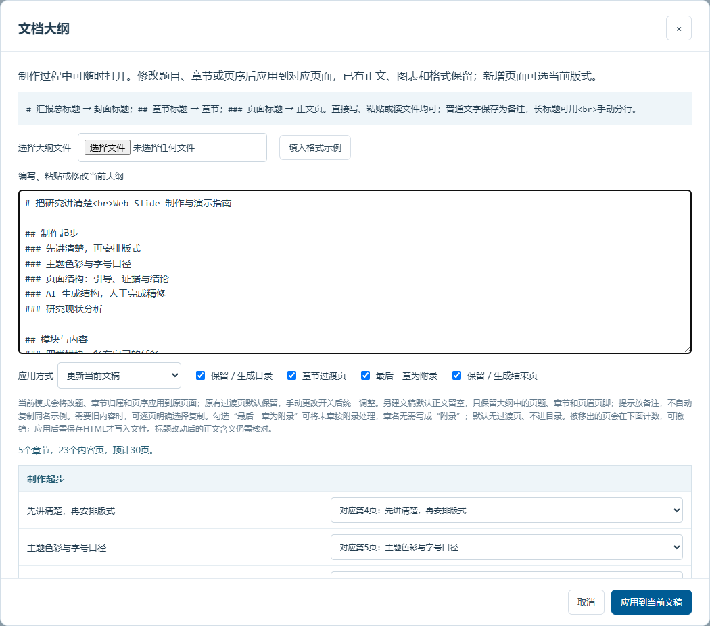
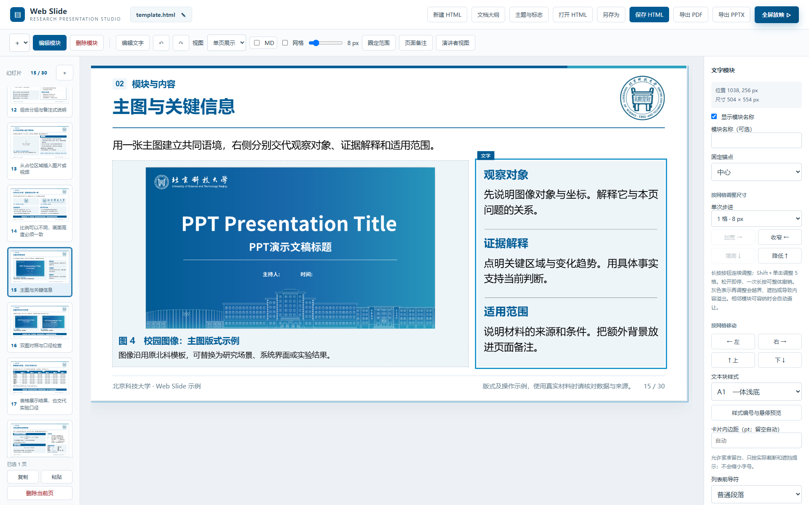
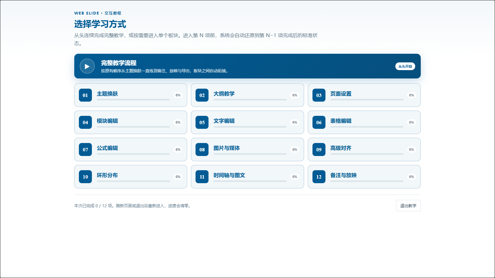
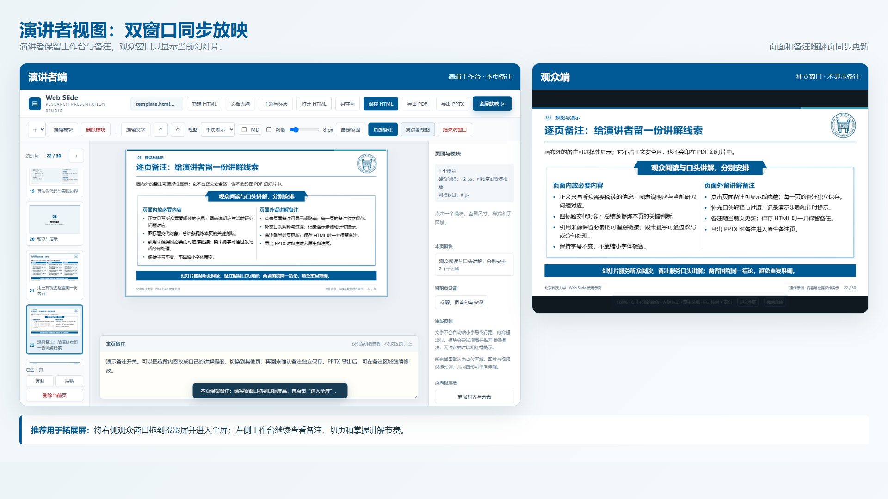

html2ppt-web-slide 正在私有仓库中测试，暂不公开源码和安装包。一条可以继续迭代的制作链路
01 先定结构AI 与用户先确认章节、逐页标题、页首句、页尾结论和备注，再生成页面骨架。
02 再做内容复用模块化模板，编辑文字、表格、公式、图片、视频、时间轴和多子区域卡片。
03 人工终审通过网格与高级对齐精修版式，检查事实、来源和换行，最后放映并导出。

同一工作台完成页面管理、内容编辑和版式调整左侧管理页面，中间查看画布，右侧根据当前对象显示针对性设置。
主要能力

大纲驱动把标题、正文摘要和备注映射到章节与页面，并能继续更新既有文稿。

模块化人工精修调整模块、子区域、网格、尺寸、位置和样式，不把 AI 初稿当成最终稿。

分项交互教学在真实工作台里练习主题、大纲、文字、表格、公式、媒体、对齐与放映。

演讲者双窗口观众窗口专注画面，工作台保留备注并同步翻页，适合扩展屏汇报。
如何访问私有测试版
Private 仓库按 GitHub 账号授权
- 把测试者的 GitHub 用户名发送给仓库所有者。
- 所有者在仓库 Settings → Collaborators 中发出邀请。
- 测试者接受邀请后，即可查看、克隆和更新仓库。
测试、合作或授权联系
来信请附 GitHub 用户名、使用场景和预期用途。